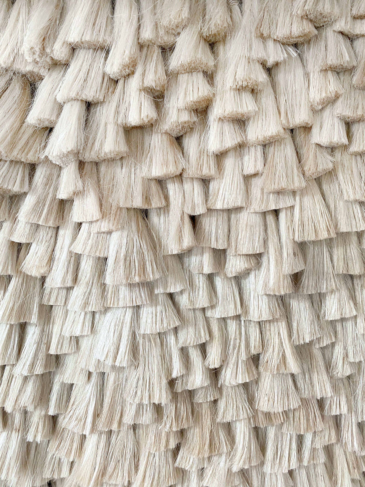

About Jute
Jute is a natural fiber that is commonly used for making textiles, sacks, and other eco-friendly products. It is a fast-growing plant with a coarse texture and is often referred to as the "golden fiber" due to its economic importance. Jute is biodegradable and environmentally friendly.
Steps to Grow Jute
- Choose a warm and humid climate with well-drained soil for jute cultivation.
- Prepare the soil by plowing and leveling it to ensure good water drainage.
- Sow jute seeds directly in the field after the last frost date. Maintain proper spacing between rows.
- Keep the soil consistently moist, especially during the early growth stage. Jute requires adequate water.
- Harvest jute plants when they reach a height of about 8-10 feet, usually within 120-150 days after planting.
Extra Information
Jute is not only valuable for its fiber but also for its eco-friendliness. It is biodegradable, renewable, and has a low environmental impact. Jute products are used in various industries, including textiles, packaging, and geotextiles.